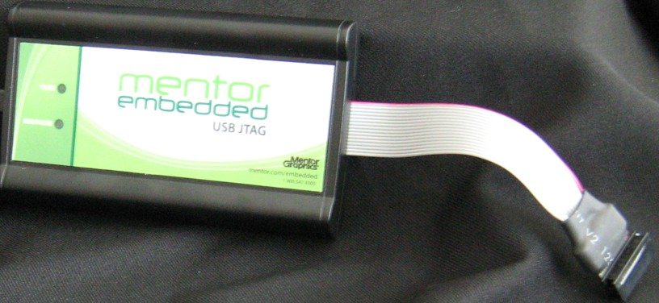
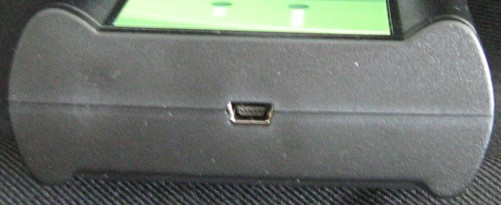

The Sourcery Probe Personal device has a number of indicator LEDs, and connectors.
Figure 3-1 and Figure 3-2 show the various LEDs and connectors of the probe device.
Figure 3-1. Sourcery Probe Personal - Top View
Figure 3-2. Sourcery Probe Personal - End View Showing USB Connector
These topics explain the various LEDs and connectors on the probe device: